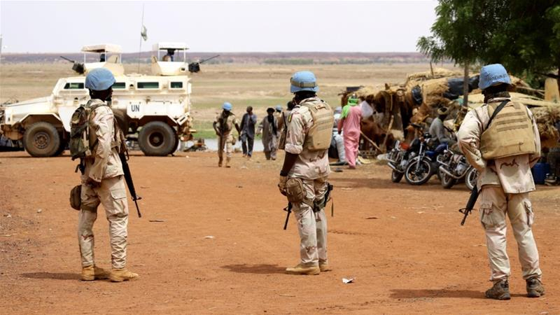
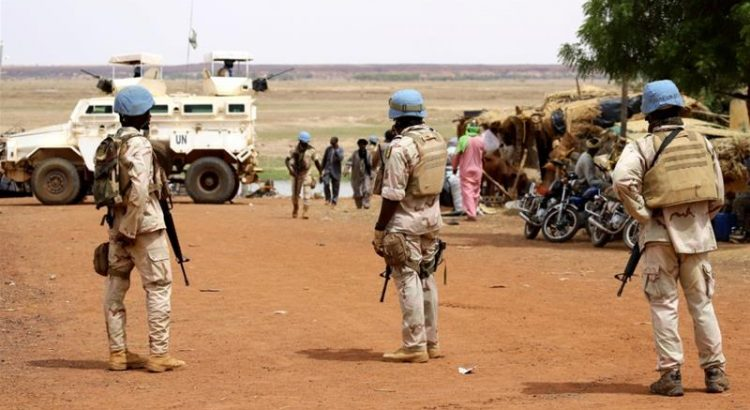
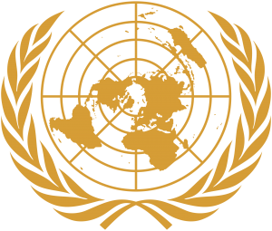
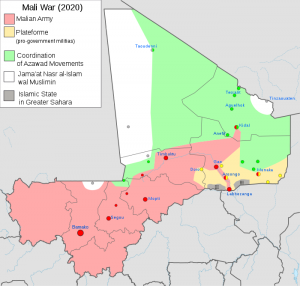

UN Renews Mali’s Peacekeeping Force

The United Nations has renewed its peacekeeping force in Mali for another year without reducing its troops, which comprise of 13,289 soldiers and 1,920 police officers.The UN mission in the country is known as Multidimensional Integrated Stabilization Mission in Mali (MINUSMA).
The UN Security Council on Monday voted unanimously towards the course.MINUSMA was established in Mali in 2013, and has troops drawn from several nations.The troops are deployed across the country that has been facing serious security situations.
The United States, which is the biggest financial contributor to the organization, had questioned the validity of the mission.It contributes $1.2 billion annually.In June, the US had suggested that a plan to gradually end the MINUSMA should be implemented.
Mali is struggling to contain an Islamist insurgency that has ripped through the country since it erupted in 2012.The insurgency has since claimed thousands of military and civilian lives.The violence in the country has since spread to its neighbors, Niger and Burkina Faso.According to UN figures, about 4,000 people were killed in Mali, Niger and Burkina Faso in 2019, and thousands others displaced.
The countries are members of the French-backed G5 Sahel group, a taskforce created by the region’s leaders in 2014, which aims to fight militants.The group also includes Mauritania and Chad.Despite the creation and the presence of 4,500 French soldiers, and more than 14,000 United Nations peacekeepers, as well as the national forces from the countries, the jihadist groups have stepped up their attacks.
Earlier in the month, after an attack on UN peacekeepers, UN Secretary General, Antonio Guterres.said that 'such cowardly acts will not deter the United Nations from its resolve to continue supporting the people and government of Mali in their pursuit of peace and stability.'The two peacekeepers were Egyptian nationals.
MINUSMA, in a statement, said that the fighters fled after a retaliatory attack from the forces.The United Nations has called for an investigation into the attack, while the head of the peacekeeping mission, Mahamat Saleh Annadif, condemned the attack, calling it a cowardly act aimed at paralyzing their operations in the area.
No militant group has claimed responsibility for the attack.However, it was similar to attacks carried out by al-Qaeda linked militants in the region.Attacks on UN peacekeepers are common in the region.Last weekend, an attack on the UN mission in the northern part of the country left ten peacekeepers dead.
Attacks on UN peacekeepers are common in the region.A week before, an attack on the UN mission in the northern part of the country left ten peacekeepers dead.
The attack, considered one of the deadliest by al-Qaeda linked militants at a UN camp, also left 25 other peacekeepers wounded.Last month, three UN peacekeepers in Chad UN were killed after their convoy was hit by a roadside bomb.Four other soldiers were seriously wounded from the blast.
[bsa_pro_ad_space id=4]
Share on Facebook Tweet Follow us
Posted On: 2020-06-30T00:00:00
Posted By: Juliet Norah






Content Date: 2020-06-30
Download Date: 2021-07-09
Document ID: L0C04ES5O